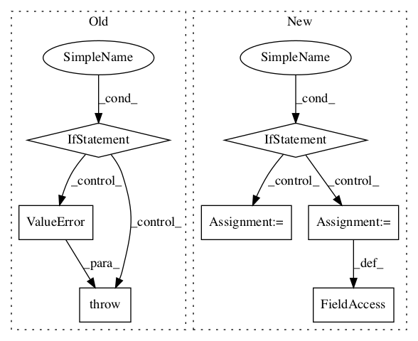

bcf6d0a188ee9ba868c1de01c347f813e3aaa35c,stellargraph/layer/graph_attention.py,GAT,__init__,#GAT#Any#Any#Any#Any#Any#Any#Any#Any#Any#Any#,636

Before Change
// check generator:
if generator is not None:
if not isinstance(generator, FullBatchNodeGenerator):
raise ValueError(
"{}: generator must be of type FullBatchNodeGenerator or None; received object of type {} instead".format(
type(self).__name__, type(generator).__name__
)
)
// Check if the generator is producing a sparse matrix
self.use_sparse = generator.use_sparse
else:
self.use_sparse = False
After Change
self.activations = activations
// Check generator and configure sparse adjacency matrix
if generator is None:
self.use_sparse = False
self.multiplicity = kwargs.get("multiplicity", 1)
self.n_nodes = kwargs.get("num_nodes", None)
self.n_features = kwargs.get("num_features", None)
else:
if not isinstance(generator, FullBatchGenerator):
raise TypeError(
"Generator should be a instance of FullBatchNodeGenerator or FullBatchLinkGenerator"
)
// Copy required information from generator
self.use_sparse = generator.use_sparse
self.multiplicity = generator.multiplicity
self.n_nodes = generator.features.shape[0]
self.n_features = generator.features.shape[1]
if self.n_nodes is None or self.n_features is None:
raise RuntimeError(
"node_model: if generator is not provided to object constructor, num_nodes and feature_size must be specified."
)
In pattern: SUPERPATTERN
Frequency: 3
Non-data size: 7
Instances
Project Name: stellargraph/stellargraph
Commit Name: bcf6d0a188ee9ba868c1de01c347f813e3aaa35c
Time:
Author: null
File Name: stellargraph/layer/graph_attention.py
Class Name: GAT
Method Name: __init__
Project Name: tensorflow/agents
Commit Name: cf51c81221fa9dcb087c8dfe48e313c71bd3dd83
Time:
Author: null
File Name: tf_agents/keras_layers/bias_layer.py
Class Name: BiasLayer
Method Name: build
Project Name: asyml/texar
Commit Name: da37438735fd4b845bb0874562bd071865c480bb
Time:
Author: null
File Name: texar/modules/encoders/rnn_encoders.py
Class Name: RNNEncoderBase
Method Name: __init__